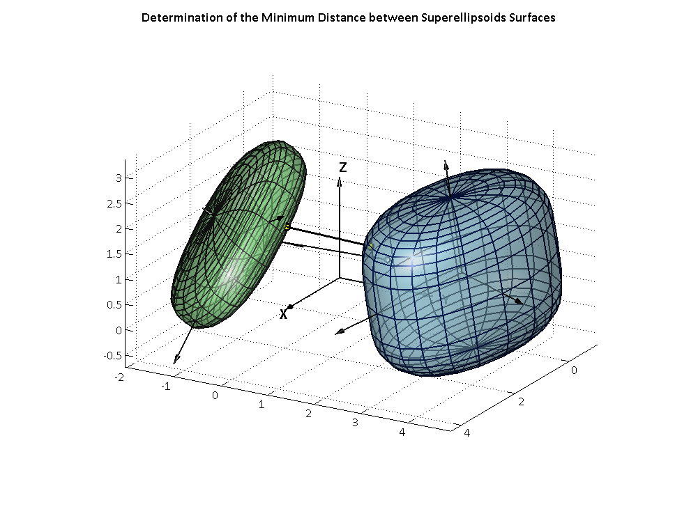

Contents
- =========================================================================
- INPUT SUPERELLIPSOIDS DATA ==============================================
- = Show options and constraints set ======================================
- Calculation of euler e0 e inv(e1,e2,e3,e4)
- Create figure
- Create Surfaces (with the parametric equations of the superellipsoids)
- Starting point estimate (initial points on the surfaces)
- lower and upper bounds
- OPTIMIZATION to determine the contact points
- Test for distance or penetration
- Display Information
- Show Solutions
function ContactOptim
% ========================================================================= % This function determines the minimum distance between two superellipsoids % surfaces(or the maximum interference distance), using optimization % techniques. The initial estimate for the contact points is determined % so that the contact points are located on the surfaces. % The visualization of the surfaces, the initial estimate and the % optimization solution for the minimum distance is provided. % % Credits: % Ricardo Fontes Portal / Luis Sousa % IDMEC - Instituto Superior Tecnico - Universidade Técnica de Lisboa % ricardo.portal(at)dem(.)ist(.)utl(.)pt % % April 2009 original version % March 2013 updated version % % VERSION 1.0 % All rights reserved. % % Authors Acknowledgment: % If you use SuperELLIPSOIDs-OPT in any program or publication, please % acknowledge % the authors by refering The Archive of Mechanical % Engineering paper: % Portal, Ricardo. Sousa, Luís. Dias, João. “Contact Detection between % Convex Superquadric Surfaces”. The Archive of Mechanical Engineering. % Versita, Warsaw. LVII(2), pp. 165-186, DOI 10.2478/v10180-010-0009-8. 2010. %
=========================================================================
close all; clear all; clc; global p1 p2 p3 p4 p5 p6 a1 a2 a3 a4 a5 a6 e1 e2 e3 e4 ConSet; global n1n n2n TRa TRb xlb xub x0;
INPUT SUPERELLIPSOIDS DATA ==============================================
p1=1.0; p2=3.2; p3=1.0; % position (x,y,z) Surf 1 p4=2.0; p5=-1.0; p6=1.3; % position (x,y,z) Surf 2 a1=2.0; a2=1.25; a3=1.6; % superellipsoid 1 semi-axes a4=2.0; a5=1.1; a6=0.6; % superellipsoid 2 semi-axes e1=4.0; e2=2.2; % implicit indexes Surf 1 (roundness) e3=3.2; e4=2.5; % implicit indexes Surf 2 (roundness) euler1A=0.0; euler2A=0.1; euler3A=-0.2; % Euler param. Surf 1 (orientation) euler1B=0.3; euler2B=0.3; euler3B=-0.1; % Euler param. Surf 2 (orientation) %==========================================================================
= Show options and constraints set ======================================
Constraints set
ConSet='normals_dot'; % 'surfaces' % surfaces only a) % 'normals_cross' % n1 x n2 b) % 'normals_cross+n1' % n1 x n2 + n2.r12 c) % 'normals_cross+n2' % n1 x n2 + n2.r12 d) % 'normals_dot' % n1.n2 e) % 'normals_dot+n1' % n1.n2 + n1.r12 f) % 'normals_dot+n2' % n1.n2 + n2.r12 g) % 'dist_n1_n2' % n1.r12 + n2.r12 h)
Calculation of euler e0 e inv(e1,e2,e3,e4)
euler0A=sqrt(1.0 - euler1A^2 - euler2A^2 - euler3A^2); euler0B=sqrt(1.0 - euler1B^2 - euler2B^2 - euler3B^2); e1(1)=2.0/e1(1); e2(1)=2.0/e2(1); e3(1)=2.0/e3(1); e4(1)=2.0/e4(1); % Calculation of the Transformation Matrices A and B TRa(1,1)= euler0A^2 + euler1A^2 - euler2A^2 - euler3A^2; % 1st column = TRA(1) TRa(2,1)= 2*(euler1A*euler2A + euler0A*euler3A); % = TRA(2) TRa(3,1)= 2*(euler1A*euler3A - euler0A*euler2A); % = TRA(3) TRa(1,2)= 2*(euler1A*euler2A - euler0A*euler3A); % 2nd column = TRA(4) TRa(2,2)= euler0A^2 - euler1A^2 + euler2A^2 - euler3A^2; % = TRA(5) TRa(3,2)= 2*(euler2A*euler3A + euler0A*euler1A); % = TRA(6) TRa(1,3)= 2*(euler1A*euler3A + euler0A*euler2A); % 3rd column = TRA(7) TRa(2,3)= 2*(euler2A*euler3A - euler0A*euler1A); % = TRA(8) TRa(3,3)= euler0A^2 - euler1A^2 - euler2A^2 + euler3A^2; % = TRA(9) TRb(1,1)= euler0B^2 + euler1B^2 - euler2B^2 - euler3B^2; % 1st column = TRA(1) TRb(2,1)= 2*(euler1B*euler2B + euler0B*euler3B); % = TRA(2) TRb(3,1)= 2*(euler1B*euler3B - euler0B*euler2B); % = TRA(3) TRb(1,2)= 2*(euler1B*euler2B - euler0B*euler3B); % 2nd column = TRA(4) TRb(2,2)= euler0B^2 - euler1B^2 + euler2B^2 - euler3B^2; % = TRA(5) TRb(3,2)= 2*(euler2B*euler3B + euler0B*euler1B); % = TRA(6) TRb(1,3)= 2*(euler1B*euler3B + euler0B*euler2B); % 3rd column = TRA(7) TRb(2,3)= 2*(euler2B*euler3B - euler0B*euler1B); % = TRA(8) TRb(3,3)= euler0B^2 - euler1B^2 - euler2B^2 + euler3B^2; % = TRA(9)
Create figure
figure1 = figure('PaperSize',[20.98 29.68],'Color',[1 1 1],... 'NumberTitle','off','ToolBar','figure','MenuBar','none','Units','pixels',... 'Name','Minimum Distance between Superellipsoids Surfaces'); annotation(gcf,'textbox',[0.5 0.99 0 0],... 'String',{'Determination of the Minimum Distance between Superellipsoids Surfaces'},... 'HorizontalAlignment','center','FontWeight','bold','FontSize',14,... 'FontName','Calibri','FitBoxToText','on','EdgeColor','none'); % Create axes axes1 = axes('Parent',gcf,'DataAspectRatio',[1 1 1],'TickDir','in',... 'FontName','Calibri','FontWeight','light','FontSize',12); set(gcf,'color','white', 'Position',[20 50 1000 750],... 'nextplot','replacechildren'); view([120 20]); hold('all'); lighting GOURAUD % FLAT, GOURAUD, PHONG, NONE camlight headlight

Create Surfaces (with the parametric equations of the superellipsoids)
Surface 1
nxy = 20; nxz = nxy; i=1; for w=-pi : 2*pi/nxy : pi; j=1; for n=-pi/2 : pi/nxz : pi/2; xA(j,i)=a1*sign(cos(n))*abs(cos(n)).^e1*sign(cos(w))*abs(cos(w)).^e2; yA(j,i)=a2*sign(cos(n))*abs(cos(n)).^e1*sign(sin(w))*abs(sin(w)).^e2; zA(j,i)=a3*sign(sin(n))*abs(sin(n)).^e1; j=j+1; end i=i+1; end % Surface 2 i=1; for w=-pi : 2*pi/nxy : pi; j=1; for n=-pi/2 : pi/nxz : pi/2; xB(j,i)=a4*sign(cos(n))*abs(cos(n)).^e3*sign(cos(w))*abs(cos(w)).^e4; yB(j,i)=a5*sign(cos(n))*abs(cos(n)).^e3*sign(sin(w))*abs(sin(w)).^e4; zB(j,i)=a6*sign(sin(n))*abs(sin(n)).^e3; j=j+1; end i=i+1; end % Global coordinates xA_global= p1 + xA*TRa(1,1) + yA*TRa(1,2) + zA*TRa(1,3); yA_global= p2 + xA*TRa(2,1) + yA*TRa(2,2) + zA*TRa(2,3); zA_global= p3 + xA*TRa(3,1) + yA*TRa(3,2) + zA*TRa(3,3); xB_global= p4 + xB*TRb(1,1) + yB*TRb(1,2) + zB*TRb(1,3); yB_global= p5 + xB*TRb(2,1) + yB*TRb(2,2) + zB*TRb(2,3); zB_global= p6 + xB*TRb(3,1) + yB*TRb(3,2) + zB*TRb(3,3); % Global Reference Frame w=4; h=2*w; LWidth=1.5; arrowlenght=2; arrowXX = arrow3([0 0 0],[arrowlenght 0 0],'_K',w,h); set(arrowXX,'LineWidth',LWidth); arrowYY = arrow3([0 0 0],[0 arrowlenght 0],'_K',w,h); set(arrowYY,'LineWidth',LWidth); arrowZZ = arrow3([0 0 0],[0 0 arrowlenght],'_K',w,h); set(arrowZZ,'LineWidth',LWidth); text(1.1*arrowlenght,0,0,'X','FontName','Calibri','FontWeight','bold','FontSize',16); text(0,1.1*arrowlenght,0,'Y','FontName','Calibri','FontWeight','bold','FontSize',16); text(0,0,1.1*arrowlenght,'Z','FontName','Calibri','FontWeight','bold','FontSize',16); % Local Reference Frames w=4; h=2*w; LWidth=1.5; delta=1.5; arrowxxA = arrow3([p1 p2 p3],[p1+a1*delta*TRa(1,1) p2+a1*delta*TRa(2,1) p3+a1*delta*TRa(3,1)],'_K',w,h); arrowyyA = arrow3([p1 p2 p3],[p1+a2*delta*TRa(1,2) p2+a2*delta*TRa(2,2) p3+a2*delta*TRa(3,2)],'_K',w,h); arrowzzA = arrow3([p1 p2 p3],[p1+a3*delta*TRa(1,3) p2+a3*delta*TRa(2,3) p3+a3*delta*TRa(3,3)],'_K',w,h); set(arrowxxA,'LineWidth',LWidth);set(arrowyyA,'LineWidth',LWidth);set(arrowzzA,'LineWidth',LWidth); arrowxxB = arrow3([p4 p5 p6],[p4+a4*delta*TRb(1,1) p5+a4*delta*TRb(2,1) p6+a4*delta*TRb(3,1)],'_K',w,h); arrowyyB = arrow3([p4 p5 p6],[p4+a5*delta*TRb(1,2) p5+a5*delta*TRb(2,2) p6+a5*delta*TRb(3,2)],'_K',w,h); arrowzzB = arrow3([p4 p5 p6],[p4+a6*delta*TRb(1,3) p5+a6*delta*TRb(2,3) p6+a6*delta*TRb(3,3)],'_K',w,h); set(arrowxxB,'LineWidth',LWidth);set(arrowyyB,'LineWidth',LWidth);set(arrowzzB,'LineWidth',LWidth); surfaceA = surf(xA_global,yA_global,zA_global,'Parent',gca,... 'EdgeLighting','gouraud',... 'FaceLighting','gouraud',... 'LineWidth',1.5,... 'FaceColor',[0.68 0.92 1],... 'FaceAlpha',0.6,... 'EdgeColor',[0.04 0.14 0.42]); surfaceB = surf(xB_global,yB_global,zB_global,'Parent',gca,... 'EdgeLighting','gouraud',... 'FaceLighting','gouraud',... 'LineWidth',1.5,... 'FaceColor',[0.6 1.0 0.6],... 'FaceAlpha',0.6,... 'EdgeColor',[0.2 0.2 0.2]); axis equal; axis on; grid on;

Starting point estimate (initial points on the surfaces)
miu0=0.05; % Start with the default options options = optimset; % Modify options setting options = optimset(options,'Display','off',... % iter none final 'MaxFunEvals' ,50,... 'MaxIter' ,20,... 'TolFun' ,1e-3,... 'TolX' ,1e-3,... 'Jacobian' ,'off',... 'LargeScale' ,'off'); tic miuA = fsolve(@startpoint_estimate,miu0,options,a1,a2,a3,e1,e2,TRa); miuB = fsolve(@startpoint_estimate,miu0,options,a4,a5,a6,e3,e4,TRb); timeStartPoint= toc; x0(1) = p1 + miuA*(p4-p1); x0(4) = p4 + miuB*(p1-p4); x0(2) = p2 + miuA*(p5-p2); x0(5) = p5 + miuB*(p2-p5); x0(3) = p3 + miuA*(p6-p3); x0(6) = p6 + miuB*(p3-p6); Sol1 =line([x0(1) x0(4)],[x0(2) x0(5)],[x0(3) x0(6)],... 'Parent',gca,'MarkerFaceColor',[1 1 1], 'MarkerEdgeColor',[0 0 0],... 'Marker','o','MarkerSize',6.0,'LineWidth',1.5, 'Color',[0 0 0]);
lower and upper bounds
aaux1= [a1 a2 a3]; xbound1=max(aaux1); aaux2= [a4 a5 a6]; xbound2=max(aaux2); gap2=1.1; xlb(1)=p1-(gap2)*xbound1; xlb(2)=p2-(gap2)*xbound1; xlb(3)=p3-(gap2)*xbound1; xlb(4)=p4-(gap2)*xbound2; xlb(5)=p5-(gap2)*xbound2; xlb(6)=p6-(gap2)*xbound2; xub(1)=p1+(gap2)*xbound1; xub(2)=p2+(gap2)*xbound1; xub(3)=p3+(gap2)*xbound1; xub(4)=p4+(gap2)*xbound2; xub(5)=p5+(gap2)*xbound2; xub(6)=p6+(gap2)*xbound2;
OPTIMIZATION to determine the contact points
options = optimset; options = optimset(options,'Display','off',... 'off',... 'iter',... 'notify',... 'final',... 'Algorithm','interior-point',...'Trust-Region-Reflective',... 'interior-point',...'Active-Set',... 'interior-point',... 'SubproblemAlgorithm' ,'cg',... (ldl-factorization,cg,lu-eig-factorization,cg-lu) 'AlwaysHonorConstraints','none',...'bounds',... 'MaxIter',100,... 'MaxFunEvals',1000,... 'DerivativeCheck','off',... 'Diagnostics','off',... 'GradObj','on',... % if on -> consider user obj function gradient 'GradConstr','off',... % if on -> consider user contraints function gradient 'FinDiffType','forward',... 'central',... 'Hessian','bfgs',... 'lbfgs',... 'TolX', 1e-6,... % default 1e-10 'TolCon',1e-6,... % default 1e-06 'TolFun',1e-6); % default 1e-06 % 'PlotFcns' ,{@plotfval @plotconstrviolation}); % @optimplotx % @optimplotfunccount % @optimplotstepsize % @optimplotfirstorderopt tic % starts a stopwatch timer [x,OBJopt,exitflag,output] = fmincon(@objfun,x0,[],[],[],[],xlb,xub,@constraints,options); timeoptMATLAB=timeStartPoint + toc; lastiter = output.iterations; %ConViol = output.constrviolation; Fcalls = output.funcCount; x1opt=x(1);x2opt=x(2); x3opt=x(3); x4opt=x(4); x5opt=x(5); x6opt=x(6); [c ceq]=constraints(x); % to show the nonlinear constraints values ceq
Test for distance or penetration
Compute the dot product between n1 and (x4,x5,x6)-(x1,x2,x3)
ContactTest = n1n(1)*(x4opt-x1opt)+n1n(2)*(x5opt-x2opt)+n1n(3)*(x6opt-x3opt); if (ContactTest <= 0) OBJreport = -sqrt(OBJopt); fprintf('Contact detected with : %10.6f m of penetration \n',-OBJreport); else OBJreport = sqrt(OBJopt); fprintf('Minimum distance between bodies: %10.6f m \n',OBJreport); end
Minimum distance between bodies: 1.731128 m
Display Information
fprintf('Point on 1st superellipsoid: %10.6f %10.6f %10.6f \n', x1opt,x2opt,x3opt); fprintf('Point on 2nd superellipsoid: %10.6f %10.6f %10.6f \n\n', x4opt,x5opt,x6opt); fprintf('Initial estimate and optimization runs in: %6.3f seconds \n',timeoptMATLAB); fprintf('Opt. Iterations: %5i \n',lastiter); fprintf('Opt. Fun calls: %5i \n',Fcalls); G1opt = ceq(1); G2opt = ceq(2); if (strcmp(ConSet,'surfaces')) fprintf('Nonlinear Constraints: %10.4g %10.4g\n',ceq); elseif (strcmp(ConSet,'normals_dot')) G3opt = ceq(3); fprintf('Nonlinear Constraints: %10.4g %10.4g %10.4g\n',ceq); elseif (strcmp(ConSet,'normals_dot+n1') || strcmp(ConSet,'normals_dot+n2') || strcmp(ConSet,'dist_n1_n2')) G3opt = ceq(3); G4opt = ceq(4); fprintf('Nonlinear Constraints: %10.4g %10.4g %10.4g %10.4g\n',ceq); elseif (strcmp(ConSet,'normals_cross')) G3opt = ceq(3); G4opt = ceq(4); G5opt = ceq(5); fprintf('Nonlinear Constraints: %10.4g %10.4g %10.4g %10.4g %10.4g\n',ceq); elseif (strcmp(ConSet,'normals_cross+n1') || strcmp(ConSet,'normals_cross+n2')) G3opt = ceq(3); G4opt = ceq(4); G5opt = ceq(5); G6opt = ceq(6); fprintf('Nonlinear Constraints: %10.4g %10.4g %10.4g %10.4g %10.4g %10.4g\n',ceq); end
Point on 1st superellipsoid: 1.912502 1.761475 1.548071 Point on 2nd superellipsoid: 2.016728 0.036250 1.645742 Initial estimate and optimization runs in: 0.742 seconds Opt. Iterations: 20 Opt. Fun calls: 142 Nonlinear Constraints: 3.078e-012 2.48e-011 2.95e-011
Show Solutions
figure(1); % Make the figure h current, visible, and % displayed on top of other figures % set(0,'CurrentFigure',1); % Make the figure h current, but do not % change its visibility or stacking with respect to other figures % Show normals of the initial estimate ScaleNorm=2; NormalA =line([x0(1) (x0(1)+(n1n(1))/ScaleNorm)],... [x0(2) (x0(2)+(n1n(2))/ScaleNorm)],... [x0(3) (x0(3)+(n1n(3))/ScaleNorm)],... 'Parent',gca,'LineWidth',1.75, 'Color',[0 0 0],'DisplayName','Normal A'); NormalB =line([x0(4) (x0(4)+(n2n(1))/ScaleNorm)],... [x0(5) (x0(5)+(n2n(2))/ScaleNorm)],... [x0(6) (x0(6)+(n2n(3))/ScaleNorm)],... 'Parent',gca,'LineWidth',1.75, 'Color',[0 0 0],'DisplayName','Normal B'); disp(' ') disp('Press any key to continue.') pause % show Final Solution Solution=line([x1opt x4opt], [x2opt x5opt], [x3opt x6opt],... 'Parent',gca,'MarkerFaceColor',[1 1 0], 'MarkerEdgeColor',[0 0 0],... 'Marker','o','MarkerSize',8.0,'LineWidth',2, 'Color',[0 0 0]); disp('END.') fclose('all');
Press any key to continue. END.

end % Function Optim